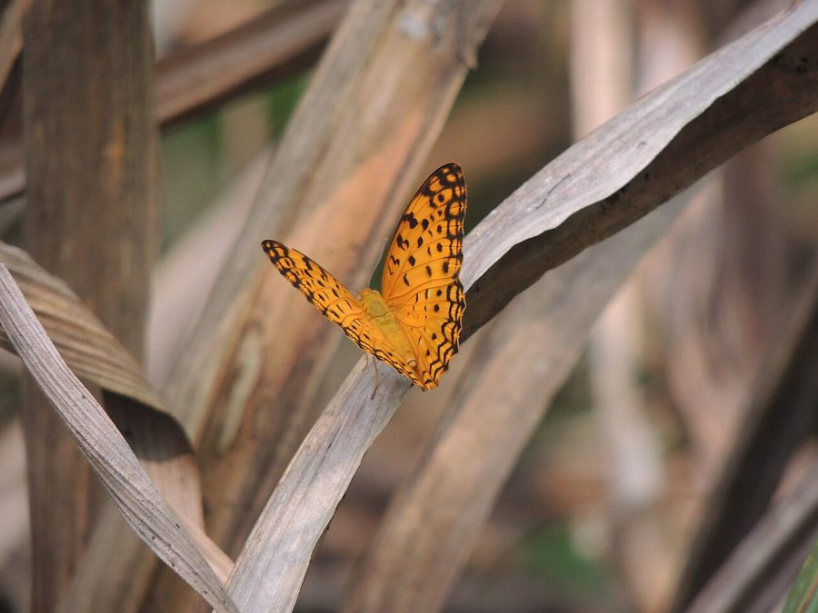

कॉमन लेपर्ड तितलीCommon Leopard
Phalanta phalantha · Nymphalidae · INS-0072

- Scientific nameवैज्ञानिक नाम
- Phalanta phalantha (Dury, 1773)
- Familyकुल
- Nymphalidae
- Hindiहिंदी
- कॉमन लेपर्ड तितली
- Local namesस्थानीय नाम
- common leopard, leopard titli, chittidar narangi titli, tendua titli
- Status hereयहाँ की स्थिति
- native
- Movementआवागमन
- Resident, here all year
- IUCNIUCN
- not evaluated
- Reviewसमीक्षा
- audited and independently read
When to look कब देखें
Present all year.साल भर मौजूद।
Uses and possibilities उपयोग और संभावनाएँ
Drawn from the documented uses in the profile below, where each is labelled traditional, current or a research lead. All uses →
Tell it apart from इनसे अलग पहचानें
सामान्य तेंदुआ / Common Leopard
Phalanta phalantha (Drury, 1773) — Nymphalidae
सामान्य तेंदुआ — पूर्वी उत्तर प्रदेश के खेतों, बागों और सूखे जंगली इलाकों में पाई जाने वाली एक बहुत ही आम मध्यम आकार की भूरी-नारंगी तितली है, जिसके पंखों पर काले दाग़ होते हैं, जो इसे "तेंदुआ" (leopard) का नाम देते हैं। इसके पंखों का आधार रंग नारंगी-भूरा होता है जिन पर 6-10 काले गोल दाग़े होते हैं। यह तितली शहतूत परिवार की पत्तियों खाती है। इसकी उड़ान तेज़ और सीधी होती है, और यह तेज़ दिन में सक्रिय होती है। यह एक अत्यंत कठोर तितली है जो गर्म और सूखे मौसम में भी पनपती है।
Quick Identification त्वरित पहचान
| Feature | Description |
|---|---|
| Size | Medium-sized butterfly; body length 24–28 mm; wingspan 65–80 mm |
| Coloration | Orange-brown or tawny-red ground color with dark brown or black spots |
| Forewing | Contains 6–10 irregular, round black spots on an orange-brown background |
| Hindwing | Fewer spots than forewing; orange-brown with 3–5 black spots along the margin |
| Flight | Fast, direct flight; stays low to the ground but covers distance rapidly |
| Behaviour | Attracted to damp earth and muddy spots; often seen in groups |
Field tip: Look for an orange-brown butterfly with numerous black spots (like a leopard's markings) flying rapidly over open ground and weedy areas. The rapid flight and spotted pattern readily identify the Common Leopard.
Morphology आकारिकी
Biometrics (typical measurements for adults in northern Indian plains):
| Measurement | Range |
|---|---|
| Body length | 24–28 mm |
| Wingspan | 65–80 mm |
| Forewing length | 30–37 mm |
Body: Moderately robust, brown above, paler below. The head bears clubbed antennae with a darker tip.
Wings:
- Dorsal (upper) surface: The ground color of both wings is a warm orange-brown or tawny-red. The forewing is marked with 6–10 round, black spots of varying sizes scattered across the surface. The hindwing has 3–5 similar black spots concentrated along the marginal region.
- Ventral (lower) surface: Paler orange-tan with similar black spot pattern, though less distinct.
Sexual Dimorphism: Males have a more vivid orange coloration than females, which are duller and slightly larger.
Behaviour & Ecology व्यवहार और पारिस्थितिकी
Fast, low-flying forager. The Common Leopard is a strong, rapid flyer that covers considerable distances in search of food and mates. It is strongly attracted to damp earth and muddy spots, where males gather to extract sodium minerals from soil moisture. This behavior, called mud-puddling, is important for their reproduction. The butterfly is highly tolerant of heat and dry conditions and remains active even during the hot season when many other butterflies have disappeared.
Mulberry specialist. The caterpillar is highly specialized on White Mulberry and related Moraceae family plants. The female butterfly is highly selective about where she lays eggs, searching carefully for appropriate host plants.
Life Cycle / Phenology जीवन चक्र
| Stage / Season | Event |
|---|---|
| Egg | Laid in clusters on mulberry leaves; pale yellow; hatch in 4–5 days |
| Larval (Caterpillar) | 4–5 instars; mature caterpillar 28–32 mm long; brown with pale stripes and spines; development 18–22 days |
| Pupa | Smooth hanging chrysalis; greenish or brown; emerges in 10–15 days |
| Adult | Emerges March to November; peak abundance May to October; lifespan 3–4 weeks |
Host Plants or Prey आहार
Larval host plants:
- White Mulberry (White Mulberry / Morus alba), Black Mulberry (Morus nigra), and other Moraceae family plants.
Adult nectar sources:
- Lantana camara (Indian Lantana), Cosmos, wild composites, and various flowering herbs.
Predators / Natural Enemies शत्रु
- Birds: Insectivorous birds like House Crow, Indian Roller, and dragonflies.
- Spiders: Crab spiders and jumping spiders on flowers.
- Parasitoid Wasps: Small wasps parasitize caterpillars and pupae.
Agricultural / Human Relevance कृषि प्रासंगिकता
Pollinator. The Common Leopard is an active visitor to flowering crops and garden plants, serving as an effective pollinator.
Indicator species. Its abundance indicates the presence of mulberry plants and reflects the overall health of roadside and field-margin vegetation.
Expected Locally स्थानीय रूप से अपेक्षित
Not a field record. Written from published accounts for eastern Uttar Pradesh. No confirmed local sighting yet — if you have seen it, that is what the atlas needs.
अभी तक स्थानीय पुष्टि नहीं। यह विवरण प्रकाशित स्रोतों से है, किसी अवलोकन से नहीं।
To be expected in Basti district wherever mulberry plants grow, particularly near agricultural fields and roadside areas. Look for orange-brown butterflies with black spots flying rapidly over open ground and muddy patches. Check mulberry leaves for clusters of brown caterpillars with spines. The first local record would be a photograph with place and date; send it to the atlas contact on the About page.
Distribution वितरण
Global range: Widespread across Asia, from India through Southeast Asia to Japan and Australia.
In India: Distributed throughout the peninsula and the Gangetic plain.
In Uttar Pradesh: Abundant resident in all agricultural and forest districts.
In Basti district / eastern UP: Expected in all blocks with mulberry cultivation or wild growth.
Research Questions शोध प्रश्न
Anyone can investigate these | कोई भी इन प्रश्नों की जाँच कर सकता है
- Which Moraceae species support the most Common Leopard caterpillars in Basti fields? — Survey and record caterpillars on different mulberry varieties.
- How many eggs does a female Common Leopard lay during her lifetime? — Mark and observe captive females.
- Do males prefer muddy spots near particular crops or terrain types for mud-puddling? / क्या नर तितलियाँ विशेष फसलों या जगहों के पास की कीचड़ को पसंद करती हैं? — Observe and map mud-puddling sites.
- What is the phenology of mulberry leaves and how does it match the butterfly's activity period? — Document leaf flush and compare with butterfly presence.
- Do Common Leopards show preferences for salt or other minerals in mud? — Conduct field trials with mineral-supplemented mud spots.
Similar Species मिलती-जुलती प्रजातियाँ
| Species | How to tell apart | हिंदी |
|---|---|---|
| Plain Leopard (Virachola isocrates) | Smaller; spots more regular and aligned; hindwing spots in a neat row | साधारण तेंदुआ — छोटा, नियमित दाग़े |
| Painted Leopard (Calinaga davidis) | Larger; spots more numerous and smaller; more restricted to the Himalayas | चित्रित तेंदुआ — बड़ा, छिटपुट दाग़े |
Field rule: An orange-brown butterfly with 6–10 irregular black spots on the forewing and rapid, direct flight over open ground is the Common Leopard.
Taxonomy & Classification वर्गीकरण
Original description. Drury described the Common Leopard as Papilio phalantha in 1773 in Illustrations of Exotic Entomology. The type locality is India. The genus Phalanta was later established to separate these mulberry-feeding species.
Subspecies. The nominate subspecies P. p. phalantha occurs throughout the Indian subcontinent.
Family and order placement. Order Lepidoptera, family Nymphalidae, subfamily Nymphalinae.
Phylogenetic notes. Phalanta is a genus of Asian nymphalid butterflies, closely related to Neptis and Junonia, sharing similar rapid-flight behaviors and host-plant associations.
IUCN status rationale. Not evaluated. Common and widespread, under no conservation threat.
Photo Gallery फोटो गैलरी
No photos yet — add field photos to media/species/common_leopard/ and run node scripts/sync_photos.js.
Photos needed आवश्यक फोटो
- [ ] Adult on mulberry leaf (शहतूत पर)
- [ ] Adult mud-puddling (कीचड़ पर)
- [ ] Caterpillar cluster on host (इल्लियों का समूह)
References संदर्भ
- Drury, D. (1773). Illustrations of Exotic Entomology. London.
- Bingham, C.T. (1905). The Fauna of British India, including Ceylon and Burma. Butterflies. Vol. 1. Taylor & Francis, London.
- Kehimkar, I. (2008). The Book of Indian Butterflies. Bombay Natural History Society, Mumbai.
- Kunte, K. (2000). Butterflies of Peninsular India. Universities Press, Hyderabad.
- Zoological Survey of India (2010). Fauna of Eastern Uttar Pradesh.
- GBIF Occurrence Data — Phalanta phalantha, Uttar Pradesh (2010–2025).
Source file: species/fauna/insects/common_leopard.md